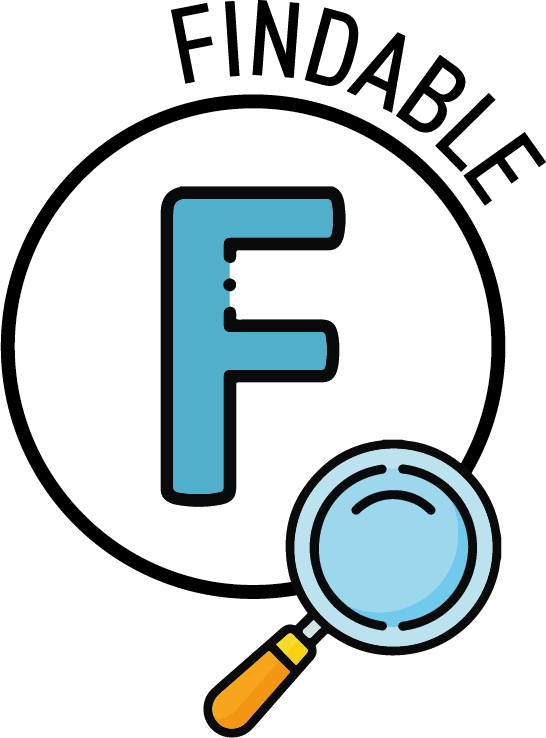

Harnessing Data Science and Artificial Intelligence to:
Eliminate barriers that prevent institutions from performing meaningful strategic analysis
Manage growing expectations among stakeholders and institutional leadership
Prioritize consistent data governance and management principles
Part 2 · AI Literacy
AI vs data science
Data science: structured analysis, statistics, reproducible pipelines, dashboards
AI / LLMs: language generation, pattern matching, unstructured data, probabilistic output
They complement each other — but people conflate them
Part 2 · AI Literacy
AI tools: what's available and what's different
Categories
Chatbots — ChatGPT, Claude, Gemini. General-purpose conversation and generation.
Writing assistants — Grammarly, Copilot. Embedded in your workflow.
Coding assistants — GitHub Copilot, Cursor. Code generation and debugging.
Specialized tools — Research discovery, grant matching, compliance screening.
Consumer vs institutional
Consumer (free/personal) — your data may train the model, limited privacy controls, no institutional audit trail
Enterprise / institutional — data stays in your tenant, admin controls, audit logging, compliance certifications
The same product name can mean very different data handling depending on the license tier
Check with your IT office: what tools does your institution license, and what are the terms?
Part 2 · AI Literacy
How LLMs actually work
Predict the next token based on patterns in training data
No understanding, no memory, no intent of their own
Extremely capable at text generation, translation, summarization, extraction
Improving fast — but still prone to confident-sounding errors, especially on niche or rapidly changing facts
Part 2 · AI Literacy
Build a sentence one token at a time
Click the next word. Each choice shifts what comes next, just like an LLM.
No right answer, only probabilities. This is why LLMs produce different output each time.
Part 2 · AI Literacy
Accuracy and its limits
LLM output is probabilistic, not deterministic
The same prompt can produce different answers each time
Sounds confident even when wrong — “hallucination”
The more niche or recent the fact, the more likely the model is guessing
Traditional analytics: same query, same data, same answer. LLMs: same prompt, different answer — by design.
Disciplines that help: structured output, temperature control, version pinning, human review
Part 2 · AI Literacy
Spot the hallucination
This AI-generated paragraph contains three false statements. Click the sentences you think are wrong.
The NIH requires R01 applications to include a biosketch for each senior/key personnel.Institutions must submit proposals through Grants.gov using the SF424 form set.The standard NIH modular budget threshold is $350,000 per year in direct costs.All proposals require institutional official sign-off before submission to the federal sponsor.NSF proposals must include a two-page project summary addressing intellectual merit and broader impacts.Indirect cost rates are renegotiated annually with each federal agency.
Part 2 · AI Literacy
AI outputs carry hidden biases
LLMs learn from training data that reflects historical and societal biases
AI-drafted broader impacts, DEI narratives, and personnel descriptions can default to stereotypical framing without anyone noticing
Budget justifications may reflect geographic or institutional size assumptions baked into training data
Bias is harder to spot than hallucination — the output reads as reasonable, it's just skewed
What to watch for
Gendered language in role descriptions
Assumptions about institution type or size
Missing perspectives or communities
Default “prestige” framing (R1 bias)
What to do
Ask AI to check its own output for bias
Have a second reader review AI-drafted text
Compare output against your institutional values
Treat AI drafts as starting points, not final copy
Part 2 · AI Literacy
What you share with AI matters
Commercial AI tools are not your institution's systems. Data you paste into ChatGPT, Copilot, or Claude may be logged, used for training, or stored outside your control.
Research administrators handle FERPA records, pre-decisional budgets, personnel actions, export-controlled data, and PI conflicts of interest
Even “anonymized” data can be re-identified when combined with other context
Institutional AI policies vary — know yours before you paste
If you wouldn't email it to a stranger, don't paste it into a commercial AI.
Never share with commercial AI
Student records (FERPA)
Personnel / salary data
Export-controlled research (ITAR/EAR)
CUI / controlled unclassified info
Pre-decisional budget narratives
Conflict-of-interest disclosures
IRB/IACUC protocol details
Part 2 · AI Literacy
Federal sponsors are setting AI rules — now
NIH
NOT-OD-25-132
Applications “substantially developed by AI” will not be considered
NIH is actively using AI detection tools on submissions
Biosketches, specific aims, and research strategies are high-scrutiny areas
AI may assist — but a human must meaningfully develop the scientific content
NSF
AI use in merit review
Reviewers are prohibited from uploading proposals to non-approved AI tools
PIs should indicate AI use in project descriptions where applicable
Program officers are being trained to identify AI-generated content
These policies are evolving rapidly. Check sponsor guidelines before every submission cycle.
Part 2 · AI Literacy
Who owns AI-generated content?
US Copyright Office: AI-generated content without significant human authorship is not copyrightable
“Meaningful human contribution” is the standard — but the line is still being drawn
If AI writes your proposal narrative and you submit it unchanged, you may not own it
Training data raises separate IP questions: models learn from copyrighted material, but the legal landscape is unsettled
For research administrators
AI-assisted drafts need substantial human editing to establish authorship
AI-generated figures and data visualizations are especially murky
Institutional IP policies may not yet address AI — flag this gap
Sponsor terms of award may add additional constraints
Part 2 · AI Literacy
FAIR Principles as Operational Guardrails

Use persistent identifiers and searchable metadata.
Provide clear retrieval pathways with governed permissions.
Adopt shared formats and vocabularies across systems.
Document provenance, context, and usage constraints.
FAIR source: Wilkinson, M. D., et al. (2016).
“The FAIR Guiding Principles for scientific data management and stewardship.”
Scientific Data, 3, 160018.
Graphic: Cloud-SPAN.
Part 3 · Data Science & AI Intersection
The Intersection of Data Science and Artificial Intelligence
Shift 1
Proactive Data Science
A Shift in Our Reach
🛠️
Agentic coding and development tools make building new systems attainable in a short period of time.
📊
Traditional data science backgrounds are well-aligned with advances in artificial intelligence.
🧠
Endless opportunities and development trees can lead to “Brain Fry.”
Brain Fry citation: Harvard Business Review. (March 2026). “When Using AI Leads to Brain Fry.”
Part 3 · Data Science & AI Intersection
The Intersection of Data Science and Artificial Intelligence
Shift 2
Reactive Data Science
A Shift in Stakeholder Values
⚡
Stakeholders now expect faster, more effective solutions powered by AI.
🏁
Perceived competition and fear of getting left behind drives initiatives.
💬
Less appeal to dashboards, more appeal to chatbot interfaces.
Part 4 · Decision Frameworks
Data Science Tasks vs. AI Tasks: Then and Now
BEFORE
Careful distinction between tasks that are well-suited for “data science work” or “AI work.”
→
AFTER
Agentic workflows call specialized tools that are tailored to the target task
TRUE PRINCIPLE
Task fit matters for optimized results from artificial intelligence
Part 4 · Decision Frameworks
Where human expertise remains essential
AI has no integrity, no professional ethics, no accountability. Someone with professional judgment must always own the final call.
“A computer can never be held accountable; therefore a computer must never make a management decision.” — IBM, 1979
Policy interpretation and institutional context
Compliance determinations
Ethical judgment and risk assessment
Decisions that require accountability
Part 4 · Decision Frameworks
Does it matter how the work got done?
Human leads — Every step must be auditable. AI may assist, but a human owns the reasoning.
Human in the loop — AI prepares, a qualified person reviews and decides.
AI leads — Only the result matters. AI can lead; validate with spot-checks.
Part 4 · Decision Frameworks
RA examples for each zone
Human leads: effort certifications, IRB/IACUC reviews, conflict-of-interest determinations, financial audits, research misconduct investigations
Human in the loop: pre-award budget reviews, compliance checks, subaward risk assessments, cost transfer justifications
AI leads: drafting facility descriptions, formatting budgets, generating biosketches, auto-populating sponsor forms
Part 4 · Decision Frameworks
Classify these RA tasks
Drag each slider. What do you think?
Effort certification review
Drafting a facilities description
Pre-award budget review
IRB protocol compliance check
Generating a biosketch draft
Subaward risk assessment
Human LeadsHuman in the LoopAI Leads
Part 5 · Context Engineering
From Prompt Engineering to Intent Engineering
BEFORE
Significant emphasis placed on crafting effective prompts to optimize the output
→
AFTER
Better processes reduce the need for perfecting prompts with large, mainstream models
TRUE PRINCIPLE
Prompt design helps users get output that aligns with their intent
Part 5 · Context Engineering
Four disciplines for AI interaction
Your AI has a page limit — the context window
10%Intent
50%Information
25%Instructions
15%Conversation
Intent
Telosa
Information
Mnemos
Instructions
Promptulus
Conversation
Dialogos
Every AI model has a context window — a fixed limit on how much it can read at once. All four disciplines compete for that space. Getting the balance right is the skill.